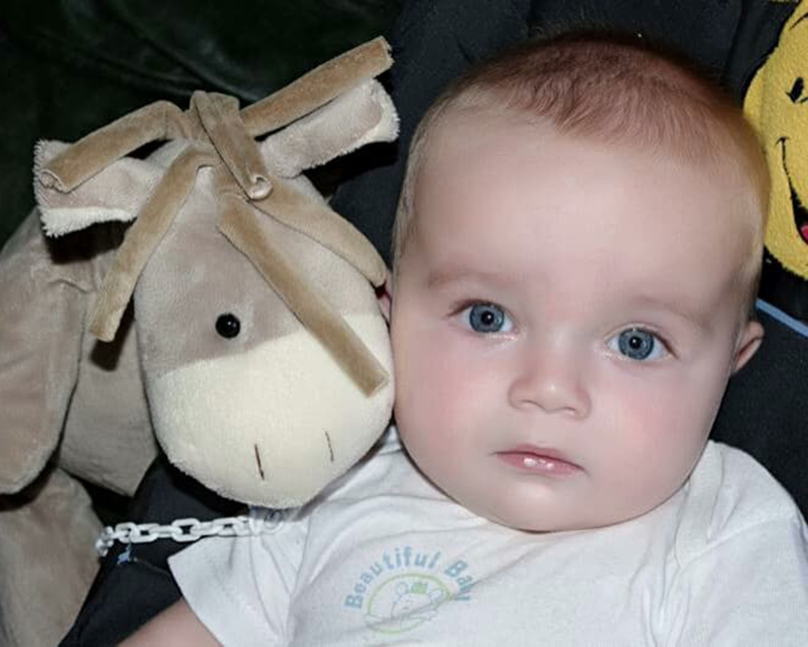
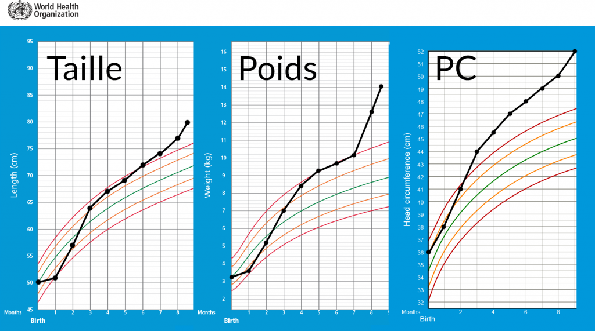
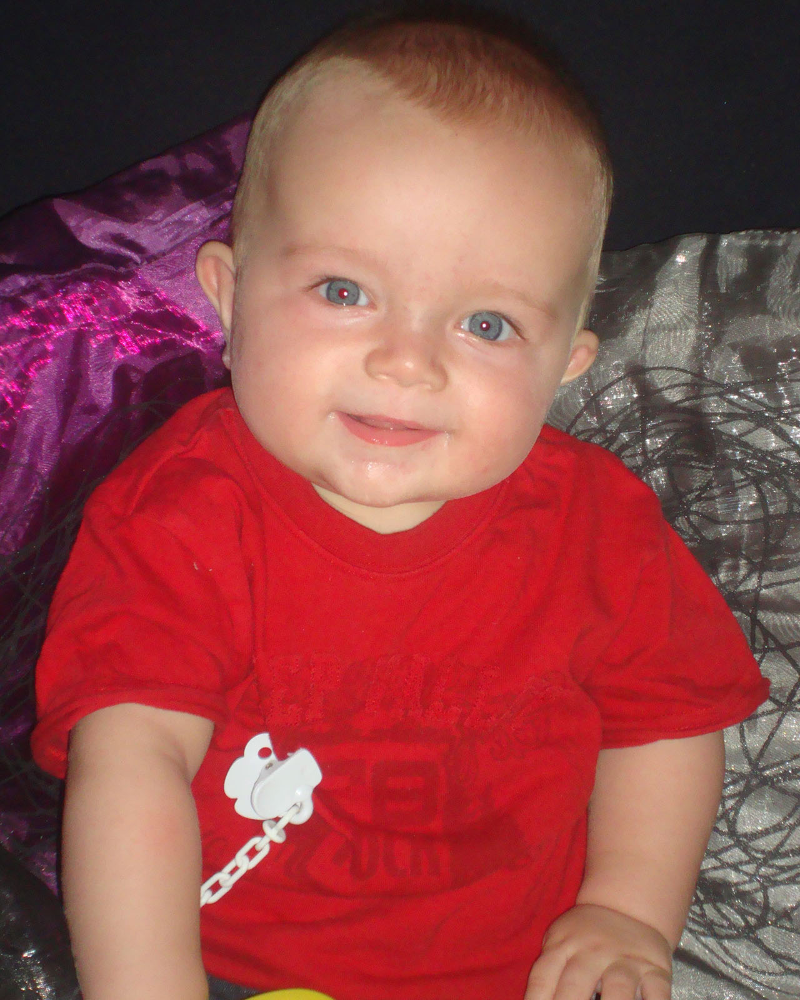
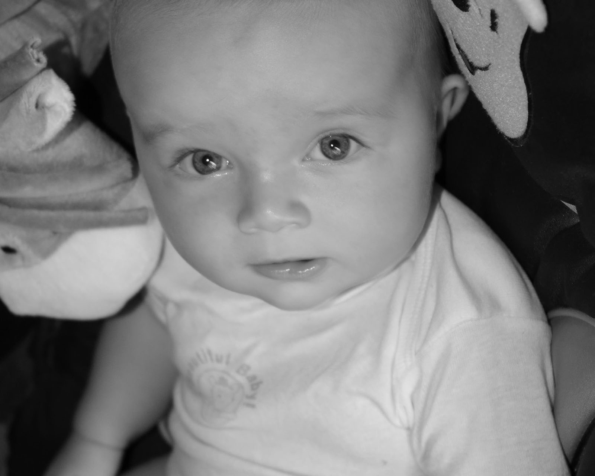

Laure
- Accueil
- Témoignages
- Laure
Q: Quelle est votre histoire ?
Je suis une maman célibataire de deux enfants aujourd'hui.
Il y a quelques années, j'ai eu la joie de mettre au monde un beau petit garçon. Naissance difficile, mais un bonheur absolu. C'était un amour, il ne pleurait quasiment jamais, seulement quand il avait faim. Il était suivi par mon médecin généraliste, uniquement pour la vaccination, et le contrôle du développement.
Très rapidement, et depuis son deuxième mois, il a une croissance hors-norme. J'en fais part au médecin qui met cela sur le compte d'un gros et grand bébé. Il avait néanmoins le périmètre crânien d'un enfant de 4 ou 5 ans, à seulement l'âge de 8 mois, la taille d'un enfant de 2 ans, et le poids d'un enfant de 3 ans. J'insistais auprès du médecin concernant ses courbes, mais il se voulait rassurant. d'autant plus qu'il n'avait jamais été malade.
Un soir, je retrouve mon bébé après sa sieste, les yeux révulsés, son petit corps tout raide, inconscient. J'appelle les secours, les pompiers et le SAMU arrivent. Mon fils convulsait. Transport dans le premier hôpital difficile. Sur place, l'urgentiste constate son périmètre crânien. Je lui montre son carnet de santé, expliquant que moi non plus, je ne comprenais pas, malgré les propos de mon médecin.

Scanner, mon fils fait une hémorragie cérébrale, il a besoin d'une ponction au cerveau. Mais l'hôpital ne possède pas le matériel nécessaire pour aider mon bébé, ils veulent le déplacer dans un autre hôpital. Durée entre la prise en charge des pompiers et arrivée au second hôpital: six heures. Six heures durant lesquelles mon fils convulse. Son cœur battait à une vitesse hallucinante, sa tension était à son maximum...
Arrivés au second hôpital, les infirmières du service de réanimation me disent qu'elles ne feront rien pour le moment et qu'il faut attendre le lendemain. J'ai dû repartir car j'ai également une petite fille, qui avait 4 ans a l'époque, et qui avait assisté a la scène lorsque j'avais retrouvé mon bébé inconscient...
Le lendemain matin je retourne a l'hôpital, mon fils est dans le coma. A partir de ce moment, c'est la descente aux enfers. Dès le lendemain, les médecins font un signalement pour syndrome du bébé secoué. Je leur demande pourquoi ils songent a cela, et ils me parlent de la fameuse triade. Je leur dis de chercher ailleurs, mais ils restent persuadés de ce verdict. Mon bébé n'a pourtant aucun bleu, aucun hématome, aucune fracture, aucune micro fissure osseuse, aucun déchirement de muscle, aucune lésion au niveau du cou, aucun décollement de la rétine, rien.
C'est seulement au bout du deuxième jour que l'équipe pose une sonde dans le cerveau de mon fils pour évacuer le surplus de liquide et de sang dans son cerveau, pour un total de 500 ml, rien que ça ! Le médecin m'annonce que mon fils a deux valves au cœur au lieu de trois, puis le lendemain, me dit que non, finalement, tout va bien pour son cœur.
On m'annonce que mon fils sera aveugle, puis handicapé, puis qu'il n'a aucune chance de vivre. Ils testent un nouvel appareillage sur mon bébé qu'ils ne savent pas utiliser, un scaphandre en plastique que l'on comprime d'air, afin d'apprendre a bébé a respirer seul, sans l'aide des machines... Malheureusement, du fait de leur incapacité à utiliser l'appareil correctement, je vois mon fils, alors mis sous tube respiratoire et sonde alimentaire, complètement comprimé dans ce scaphandre, puis d'un coup, l'air revient à la limite de l'éclatement... et ainsi de suite. Je n'en pouvais plus, tout cela pendant que le médecin chef filmait la scène avec son iPhone...
Par la suite, mon fils a fait une thrombose a la jambe, ses voies respiratoires se sont infectées, et il a fait un arrêt cardiaque... Je vivais, mon fils vivait, nous vivions un véritable enfer.... Il ne se passait pas un jour sans que je ne demande aux médecins une réunion afin de comprendre ce qu'il se passait. Me prenaient-ils sans doute pour une idiote pour me dessiner sur du papier essuie-tout les effets de l'hydrocéphalie sur le cerveau de mon bébé ?
Je leur propose d'autres hypothèses, car il est impossible que mon fils ait été victime de maltraitance... Ils reconnaissent que mes suppositions sont bonnes mais restent sur leur décision. Le médecin m'explique qu'il s'agit le plus souvent d'un acte commis par le père ou le beau-père selon une thèse de 2005 sur le sujet...
En temps normal, je n'avais pas le droit d'être dans la chambre de mon fils au vu du signalement, mais les infirmiers me laissaient heureusement auprès de lui. Je pouvais également lui faire moi-même les soins. Le nombre d'erreurs commises durant l'hospitalisation de mon fils fut hallucinant...
Un matin, mon téléphone sonne, me demandant de venir au plus vite... Une heure de trajet pour rejoindre mon bébé, je téléphonais sans cesse le temps du trajet, mais, c'était trop tard... Mon petit bébé ne m'avait pas attendu... Je suis restée près de quatre heures, mon fils mort dans mes bras... J'ai dormi, oui, dormi, car durant son hospitalisation, il n'y avait qu'auprès de lui que j'arrivais a avoir ne serait-ce que deux heures de sommeil dans mes journées... Mon fils était parti... C'était fini...
Mais pas pour moi puisqu'un signalement avait été fait. J'avais eu un rendez-vous avec une assistante chef qui m'avait complètement laminée, accusée, se vantant de m'avoir retiré la garde de mon fils, jubilant alors qu'elle m'expliquait qu'à sa sortie de l'hôpital, mon fils irait en pouponnière, qu'il se passerait des mois avant que je ne le récupère, que je n'étais plus sa maman...
J'ai eu plusieurs passage devant le juge, et j'ai été placée 13 heures en garde a vue pour interrogatoire par les gendarmes, ce qui fut une épreuve on ne peut plus éprouvante. Tout mon entourage a été entendu, toute ma vie dépiautée, mise sous écoute téléphonique, tout. Mais que pouvaient-ils trouver ? Rien, aucun antécédent sur quoi que ce soit, rien, au contraire, que de bons témoignages sur ceux qui me connaissent en tant que mère, sœur, amie, ou connaissance. Cela, la justice l'a bien compris. Même les gendarmes avaient perquisitionné des photos et des vidéos de moi avec mes enfants, même eux ont avoué qu'ils voyaient bien que le diagnostic était faux...
J'ai réussi a récupérer la garde de mon fils juste avant son décès, mais il m'aura ensuite fallu trois mois pour pouvoir récupérer le corps de mon bébé pour lui offrir ses funérailles. La raison ? La justice m'interdisait la crémation au cas où ils aient besoin du corps, malgré le fait que l'autopsie et complément d'autopsie avaient déjà eu lieu...
Par dessus tout, la morgue a renversé du formol sur ses habits d'obsèques... Devoir acheter la toute dernière tenue de mon enfant était déjà horrible, mais ajoutant à cela la morgue qui oublie de rhabiller mon bébé après l'autopsie... On s'en est rendus compte plusieurs mois après, quand on m'a remis un petit sac provenant de l'hôpital... Mon fils était en fait nu dans son petit cercueil... Et ce n'est seulement que deux ans après que j'ai pu avoir l'autorisation de la justice pour faire les vraies obsèques de mon bébé... J'ai alors donné ses vêtements de ses premières obsèques, afin qu'ils soient brûlés aussi...
Aujourd'hui, cela fait six ans que j'attends. Je ne suis pas mise en examen, mais moi et mon entourage sommes témoins assistés malgré l'absence totale de preuves.... Rien n'avance, absolument rien. C'est le quatrième juge d'instruction qui défile. L'enquête est pourtant terminée, il n'y a rien...
De mon côté, j'ai passé des années a étudier la médecine, dans mon coin, afin d'essayer de comprendre ce qui avait pu arriver à mon petit bébé. J'ai vécu un enfer, celui de voir mon enfant s'éteindre, jour après jour, de le voir partir... Et à la suite, cette procédure infondée médicalement parlant. Ma vie est détruite, mais je dois avancer pour mes enfants.
Q: Quelles ont été vos interrogations et doutes au sujet du diagnostic de SBS ?
J'ai eu des doutes sur le diagnostic de SBS dès qu'il a été évoqué par les médecins, car nous savions que nous avions rien fait de tel, mais également devant l'absence des symptômes qui sont généralement présents lors d'une réelle maltraitance : aucun bleu, aucune marque, aucune lésion, aucune microfissure osseuse, aucun hématome, aucune lésion au cou, absolument rien...
En plus de cela, le retard des soins, trajets et opérations nécessaires lors de l'hospitalisation. Les dires des médecins, qui malgré une courbe de croissance hors normes, préfèrent dire "bébé secoué" même s'ils reconnaissent que l'hydrocéphalie de naissance, non décelée par le médecin de famille malgré mes inquiétudes, soit très probable.
Q: Que ressentez-vous vis-à-vis des soupçons et accusations de maltraitance qui pèsent sur vous ?
J'ai d'abord ressenti une incompréhension totale face à ce diagnostic. Puis j'ai ressenti de la colère qu'on puisse imaginer cela de moi. J'ai d'abord été partie civile, puis placée témoin assisté, je n'ai pas été ouvertement accusée de maltraitance. Actuellement, je suis dans l'attente de savoir si je suis témoin assistée ou partie civile.
Il m'a fallu gérer le deuil de mon bébé avant de comprendre ce qu'il se passait... Aujourd'hui, j'ai toujours cette colère car après 6 ans, rien n'avance. Mais cette procédure a été et est encore aujourd'hui une terrible épreuve qui s'ajoute a mon deuil.
Q: Qu'avez-vous envie de dire aux médecins et à toutes les personnes qui vous ont accusé à tort ?
J'aimerais dire au médecin qui a suivi mon fils dans ses premiers mois qu'il aurait dû et devrait aujourd'hui dire à la justice qu'il n'a pas fait ce qu'il fallait. Qu'il aurait dû demander des examens quand je lui faisais part de mes doutes face à la croissance hors norme du périmètre crânien de mon fils.
J'aimerais dire aux médecins de l'hôpital que j'étais tellement dans l'incompréhension à l'époque de ce diagnostic que je n'ai pas une seule fois pensé à taper du poing sur la table face a ce diagnostic, aux actes pratiqués sur mon fils mourant, à l'agonie qu'il a connue avant de mourir.
J'aimerais aussi leur demander de quoi mon fils est mort, car même ça je ne le sais pas... Même si les juges et l'hôpital ne m'ont jamais accusée, j'aimerais leur dire combien c'est horrible de poser un diagnostic pareil malgré l'absence de preuves, j'aimerais leur dire ce qu'a été ma vie pendant et après ça, et dire au juge de prêter maintenant attention à la courbe de mon fils.
Tous m'ont détruite, ils sont responsables du décès de mon fils, pas moi. Mais on me laisse ainsi, avec des suspicions de maltraitance sur mon enfant...
Il avait 8 mois, aujourd'hui il aurait 6 ans, il ferait du vélo avec sa sœur, apprendrait a nager, irait au CP... Mais non, il n'est plus là, et une partie de moi s'est envolée avec lui...
